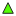
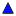

<!doctype html>
<html lang="en">
    <head>
        <meta charset="utf-8">
        <meta http-equiv="X-UA-Compatible" content="IE=edge">
        <meta name="viewport" content="initial-scale=1,user-scalable=no,maximum-scale=1,width=device-width">
        <meta name="mobile-web-app-capable" content="yes">
        <meta name="apple-mobile-web-app-capable" content="yes">
        <link rel="stylesheet" href="css/leaflet.css"><link rel="stylesheet" href="css/L.Control.Locate.min.css">
        <link rel="stylesheet" href="css/qgis2web.css"><link rel="stylesheet" href="css/fontawesome-all.min.css">
        <link rel="stylesheet" href="css/leaflet-search.css">
        <link rel="stylesheet" href="css/leaflet-control-geocoder.Geocoder.css">
        <link rel="stylesheet" href="css/leaflet-measure.css">
        <style>
        html, body, #map {
            width: 100%;
            height: 100%;
            padding: 0;
            margin: 0;
        }
        </style>
        <title>GEOLOCALISATION DES BORNES GEODESIQUES </title>
    </head>
    <body>
        <div id="map">
        </div>
        <script src="js/qgis2web_expressions.js"></script>
        <script src="js/leaflet.js"></script><script src="js/L.Control.Locate.min.js"></script>
        <script src="js/leaflet-svg-shape-markers.min.js"></script>
        <script src="js/leaflet.rotatedMarker.js"></script>
        <script src="js/leaflet.pattern.js"></script>
        <script src="js/leaflet-hash.js"></script>
        <script src="js/Autolinker.min.js"></script>
        <script src="js/rbush.min.js"></script>
        <script src="js/labelgun.min.js"></script>
        <script src="js/labels.js"></script>
        <script src="js/leaflet-control-geocoder.Geocoder.js"></script>
        <script src="js/leaflet-measure.js"></script>
        <script src="js/leaflet-search.js"></script>
        <script src="data/zonedtude_1.js"></script>
        <script src="data/Bornesgeodesiques_2.js"></script>
        <script>
        var map = L.map('map', {
            zoomControl:true, maxZoom:28, minZoom:1
        }).fitBounds([[3.7584855802922617,9.30410330782728],[4.266960247571434,10.055662039891207]]);
        var hash = new L.Hash(map);
        map.attributionControl.setPrefix('<a href="https://github.com/tomchadwin/qgis2web" target="_blank">qgis2web</a> &middot; <a href="https://leafletjs.com" title="A JS library for interactive maps">Leaflet</a> &middot; <a href="https://qgis.org">QGIS</a>');
        var autolinker = new Autolinker({truncate: {length: 30, location: 'smart'}});
        L.control.locate({locateOptions: {maxZoom: 19}}).addTo(map);
        var measureControl = new L.Control.Measure({
            position: 'topleft',
            primaryLengthUnit: 'meters',
            secondaryLengthUnit: 'kilometers',
            primaryAreaUnit: 'sqmeters',
            secondaryAreaUnit: 'hectares'
        });
        measureControl.addTo(map);
        document.getElementsByClassName('leaflet-control-measure-toggle')[0]
        .innerHTML = '';
        document.getElementsByClassName('leaflet-control-measure-toggle')[0]
        .className += ' fas fa-ruler';
        var bounds_group = new L.featureGroup([]);
        function setBounds() {
        }
        map.createPane('pane_OSMStandard_0');
        map.getPane('pane_OSMStandard_0').style.zIndex = 400;
        var layer_OSMStandard_0 = L.tileLayer('http://tile.openstreetmap.org/{z}/{x}/{y}.png', {
            pane: 'pane_OSMStandard_0',
            opacity: 1.0,
            attribution: '<a href="https://www.openstreetmap.org/copyright">© OpenStreetMap contributors, CC-BY-SA</a>',
            minZoom: 1,
            maxZoom: 28,
            minNativeZoom: 0,
            maxNativeZoom: 19
        });
        layer_OSMStandard_0;
        map.addLayer(layer_OSMStandard_0);
        function pop_zonedtude_1(feature, layer) {
            var popupContent = '<table>\
                    <tr>\
                        <td colspan="2">' + (feature.properties['NOM'] !== null ? autolinker.link(feature.properties['NOM'].toLocaleString()) : '') + '</td>\
                    </tr>\
                    <tr>\
                        <td colspan="2">' + (feature.properties['DEPARTEMEN'] !== null ? autolinker.link(feature.properties['DEPARTEMEN'].toLocaleString()) : '') + '</td>\
                    </tr>\
                    <tr>\
                        <td colspan="2">' + (feature.properties['REGION'] !== null ? autolinker.link(feature.properties['REGION'].toLocaleString()) : '') + '</td>\
                    </tr>\
                    <tr>\
                        <td colspan="2">' + (feature.properties['Régions'] !== null ? autolinker.link(feature.properties['Régions'].toLocaleString()) : '') + '</td>\
                    </tr>\
                    <tr>\
                        <td colspan="2">' + (feature.properties['Départeme'] !== null ? autolinker.link(feature.properties['Départeme'].toLocaleString()) : '') + '</td>\
                    </tr>\
                    <tr>\
                        <td colspan="2">' + (feature.properties['Arrondisse'] !== null ? autolinker.link(feature.properties['Arrondisse'].toLocaleString()) : '') + '</td>\
                    </tr>\
                    <tr>\
                        <td colspan="2">' + (feature.properties['Pauvres'] !== null ? autolinker.link(feature.properties['Pauvres'].toLocaleString()) : '') + '</td>\
                    </tr>\
                    <tr>\
                        <td colspan="2">' + (feature.properties['Non_pauvre'] !== null ? autolinker.link(feature.properties['Non_pauvre'].toLocaleString()) : '') + '</td>\
                    </tr>\
                    <tr>\
                        <td colspan="2">' + (feature.properties['Population'] !== null ? autolinker.link(feature.properties['Population'].toLocaleString()) : '') + '</td>\
                    </tr>\
                </table>';
            layer.bindPopup(popupContent, {maxHeight: 400});
        }

        function style_zonedtude_1_0() {
            return {
                pane: 'pane_zonedtude_1',
                opacity: 1,
                color: 'rgba(35,35,35,1.0)',
                dashArray: '',
                lineCap: 'butt',
                lineJoin: 'miter',
                weight: 1.0, 
                fill: true,
                fillOpacity: 1,
                fillColor: 'rgba(231,113,72,0.0)',
                interactive: true,
            }
        }
        map.createPane('pane_zonedtude_1');
        map.getPane('pane_zonedtude_1').style.zIndex = 401;
        map.getPane('pane_zonedtude_1').style['mix-blend-mode'] = 'normal';
        var layer_zonedtude_1 = new L.geoJson(json_zonedtude_1, {
            attribution: '',
            interactive: true,
            dataVar: 'json_zonedtude_1',
            layerName: 'layer_zonedtude_1',
            pane: 'pane_zonedtude_1',
            onEachFeature: pop_zonedtude_1,
            style: style_zonedtude_1_0,
        });
        bounds_group.addLayer(layer_zonedtude_1);
        map.addLayer(layer_zonedtude_1);
        function pop_Bornesgeodesiques_2(feature, layer) {
            var popupContent = '<table>\
                    <tr>\
                        <td colspan="2">' + (feature.properties['id_borne'] !== null ? autolinker.link(feature.properties['id_borne'].toLocaleString()) : '') + '</td>\
                    </tr>\
                    <tr>\
                        <td colspan="2">' + (feature.properties['X'] !== null ? autolinker.link(feature.properties['X'].toLocaleString()) : '') + '</td>\
                    </tr>\
                    <tr>\
                        <td colspan="2">' + (feature.properties['Y'] !== null ? autolinker.link(feature.properties['Y'].toLocaleString()) : '') + '</td>\
                    </tr>\
                    <tr>\
                        <td colspan="2">' + (feature.properties['h'] !== null ? autolinker.link(feature.properties['h'].toLocaleString()) : '') + '</td>\
                    </tr>\
                    <tr>\
                        <td colspan="2">' + (feature.properties['type_borne'] !== null ? autolinker.link(feature.properties['type_borne'].toLocaleString()) : '') + '</td>\
                    </tr>\
                    <tr>\
                        <td colspan="2">' + (feature.properties['Reseau_geo'] !== null ? autolinker.link(feature.properties['Reseau_geo'].toLocaleString()) : '') + '</td>\
                    </tr>\
                    <tr>\
                        <td colspan="2">' + (feature.properties['lat'] !== null ? autolinker.link(feature.properties['lat'].toLocaleString()) : '') + '</td>\
                    </tr>\
                    <tr>\
                        <td colspan="2">' + (feature.properties['long'] !== null ? autolinker.link(feature.properties['long'].toLocaleString()) : '') + '</td>\
                    </tr>\
                </table>';
            layer.bindPopup(popupContent, {maxHeight: 400});
        }

        function style_Bornesgeodesiques_2_0(feature) {
            switch(String(feature.properties['type_borne'])) {
                case 'Base':
                    return {
                pane: 'pane_Bornesgeodesiques_2',
                shape: 'triangle',
                radius: 5.6,
                opacity: 1,
                color: 'rgba(35,35,35,1.0)',
                dashArray: '',
                lineCap: 'butt',
                lineJoin: 'miter',
                weight: 1,
                fill: true,
                fillOpacity: 1,
                fillColor: 'rgba(86,255,7,1.0)',
                interactive: true,
            }
                    break;
                case 'Densification':
                    return {
                pane: 'pane_Bornesgeodesiques_2',
                shape: 'triangle',
                radius: 5.6,
                opacity: 1,
                color: 'rgba(35,35,35,1.0)',
                dashArray: '',
                lineCap: 'butt',
                lineJoin: 'miter',
                weight: 1,
                fill: true,
                fillOpacity: 1,
                fillColor: 'rgba(227,26,28,1.0)',
                interactive: true,
            }
                    break;
                case 'NewBase':
                    return {
                pane: 'pane_Bornesgeodesiques_2',
                shape: 'triangle',
                radius: 5.6,
                opacity: 1,
                color: 'rgba(35,35,35,1.0)',
                dashArray: '',
                lineCap: 'butt',
                lineJoin: 'miter',
                weight: 1,
                fill: true,
                fillOpacity: 1,
                fillColor: 'rgba(255,201,6,1.0)',
                interactive: true,
            }
                    break;
                case 'Réference':
                    return {
                pane: 'pane_Bornesgeodesiques_2',
                shape: 'triangle',
                radius: 5.6,
                opacity: 1,
                color: 'rgba(35,35,35,1.0)',
                dashArray: '',
                lineCap: 'butt',
                lineJoin: 'miter',
                weight: 1,
                fill: true,
                fillOpacity: 1,
                fillColor: 'rgba(8,12,255,1.0)',
                interactive: true,
            }
                    break;
            }
        }
        map.createPane('pane_Bornesgeodesiques_2');
        map.getPane('pane_Bornesgeodesiques_2').style.zIndex = 402;
        map.getPane('pane_Bornesgeodesiques_2').style['mix-blend-mode'] = 'normal';
        var layer_Bornesgeodesiques_2 = new L.geoJson(json_Bornesgeodesiques_2, {
            attribution: '',
            interactive: true,
            dataVar: 'json_Bornesgeodesiques_2',
            layerName: 'layer_Bornesgeodesiques_2',
            pane: 'pane_Bornesgeodesiques_2',
            onEachFeature: pop_Bornesgeodesiques_2,
            pointToLayer: function (feature, latlng) {
                var context = {
                    feature: feature,
                    variables: {}
                };
                return L.shapeMarker(latlng, style_Bornesgeodesiques_2_0(feature));
            },
        });
        bounds_group.addLayer(layer_Bornesgeodesiques_2);
        map.addLayer(layer_Bornesgeodesiques_2);
            var title = new L.Control();
            title.onAdd = function (map) {
                this._div = L.DomUtil.create('div', 'info');
                this.update();
                return this._div;
            };
            title.update = function () {
                this._div.innerHTML = '<h2>GEOLOCALISATION DES BORNES GEODESIQUES </h2>';
            };
            title.addTo(map);
        var osmGeocoder = new L.Control.Geocoder({
            collapsed: true,
            position: 'topleft',
            text: 'Search',
            title: 'Testing'
        }).addTo(map);
        document.getElementsByClassName('leaflet-control-geocoder-icon')[0]
        .className += ' fa fa-search';
        document.getElementsByClassName('leaflet-control-geocoder-icon')[0]
        .title += 'Search for a place';
        var baseMaps = {};
        L.control.layers(baseMaps,{'Bornes geodesiques<br /><table><tr><td style="text-align: center;"></td><td>Base</td></tr><tr><td style="text-align: center;"></td><td>Densification</td></tr><tr><td style="text-align: center;"></td><td>NewBase</td></tr><tr><td style="text-align: center;"></td><td>Réference</td></tr></table>': layer_Bornesgeodesiques_2,' zone d\'étude': layer_zonedtude_1,"OSM Standard": layer_OSMStandard_0,}).addTo(map);
        setBounds();
        map.addControl(new L.Control.Search({
            layer: layer_Bornesgeodesiques_2,
            initial: false,
            hideMarkerOnCollapse: true,
            propertyName: 'type_borne'}));
        document.getElementsByClassName('search-button')[0].className +=
         ' fa fa-binoculars';
        </script>
    </body>
</html>
